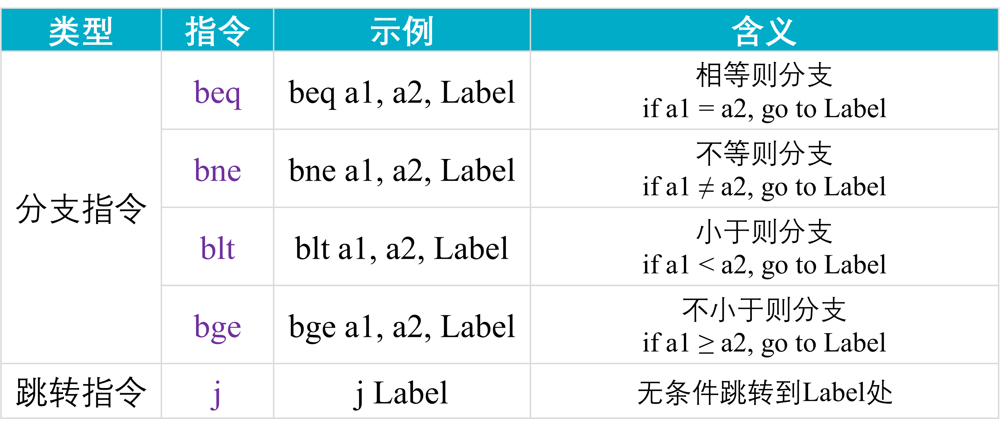
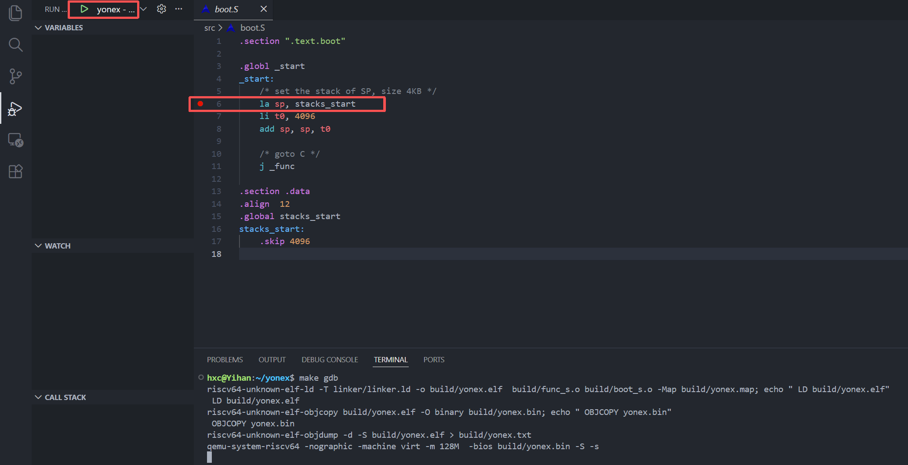
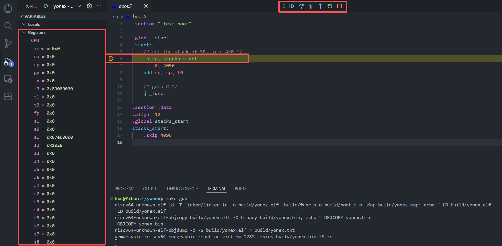

实验一 汇编程序与调试
本次实验使用QEMU模拟器模拟RISC-V计算机，熟悉和编写汇编语句，编写简单的等差数列求和程序。 使用交叉编译工具链编译程序，在QEMU模拟器上运行并调试程序。
1 QEMU 模拟器
1.1 QEMU 模拟器是什么
QEMU (Quick Emulator) 是一个开源的机器模拟器和虚拟化软件，可以模拟x86、ARM、RISC-V、PowerPC等多种处理器架构。 QEMU有3种级别的模拟， Full-system emulation 、 User-mode emulation 和 Virtualization 。
Full-system emulation 几乎完全模拟整个处理器架构的特性，接近真实的硬件。
User-mode emulation 用于运行 Linux/BSD 环境的应用程序。
Virtualization 和 KVM 一起用于运行高性能虚拟机。
我们本次实验是可以使用 Full-system emulation 或者 User-mode emulation 模式的，但是为了不引入函数调用规范等后续内容， 使用 Full-system emulation 模拟 RISC-V 裸机环境，并且32位risc-v和64位risc-v对实验内容不会产生任何影响，因此使用 qemu-system-riscv64 模拟器。
1.2 为什么需要模拟器
模拟器使用起来非常灵活和方便：首先，模拟器可以在不同的指令集架构、系统上运行，不需要真实的硬件系统；其次，在模拟器中可以进行简单的调试，对程序进行debug；再者，模拟器中能够简化部分的硬件操作，不用掌握所有部件的硬件细节（比如硬盘）。 因此，对于初学 RISC-V 以及学习特权级、操作系统等都是非常好的平台工具。
2 vscode 准备
在 Ubuntu 上安装 vscode，可以在 vscode官网 找到并下载 .deb 安装包，然后使用命令 sudo dpkg -i 包名.deb 进行安装。
在 vscode 的设置中，搜索 Debug ，勾选上 Debug: Allow Breakpoints Everywhere ，允许在任何文件中打断点，这样就可以在汇编源文件中打断点进行调试。

一定要在vscode在扩展中安装 C/C++ Extensions Pack 扩展，用于支持 C/C++ 调试。

在vscode在扩展中可以安装 RISC-V 扩展，即可对 risc-v 汇编文件语法高亮。

3 分支及跳转指令
本实验可能涉及以下表格所示的RISC-V中的分支及跳转指令。其中 j 指令并不是与硬件直接对应的指令，而是一条为用户提供的一个便捷写法，称为伪指令，本实验中你可以直接用它进行无条件跳转。

4 寄存器的ABI名称
在 RISC-V 中，通常有32个通用寄存器x0 ~ x31。 ABI 名称（Application Binary Interface Name）是汇编代码和编译器中为通用寄存器定义的别名。相比于硬件名称 x0 到 x31，这些名称更能直观地反映寄存器在函数调用和程序运行中的约定用途。

5 本实验汇编程序代码框架
我们已为大家准备了一个简易的框架代码，本次实验只需要在其中添加部分汇编语句即可。 使用以下命令将代码仓库克隆到本地：
git clone https://github.com/HuangXiCi/yonex.git
框架代码中源文件在src目录下，有两个汇编源文件(.S)，boot.S和func.S，其中boot.S对 sp 寄存器初始化，然后通过 j _func 跳转到 func.S 中的 _func 函数， _func 函数是你需要完成的函数。
汇编代码完成后，如何将代码翻译成RISC-V架构的机器能看得懂的二进制指令呢？此处需要用到交叉编译工具链。交叉编译是指在一个平台上生成另一个平台可执行代码的过程。在我们的实验中，运行编译的平台是 x86 Linux(机房的计算机)，想让二进制指令运行其上的目标架构是 RISC-V。 因此我们需要使用一套交叉编译工具链 riscv64-unknown-elf 工具链。
在 Makefile 中给出了编译、链接和启动qemu的流程，感兴趣可以深入探究。
6 GDB 图形化调试方法
我们的代码中给出了 vscode gdb 调试 qemu 的方法，以下进行简单说明。另外代码中也给出了用于配置调试器的文件 launch.json，感兴趣可以自行研究。
Step1: 在代码目录 yonex 的终端输入 make gdb 启动 qemu 等待调试
Step2: 在某一行打断点，然后在左侧 Run and Debug 中点击上方的绿色播放键开启 gdb 调试。 此时gdb就会启动，qemu会运行停留在打断点的那行。

Step3: 开启调试之后，左侧会出现调试信息，可以观察寄存器的值，这些寄存器都是使用的 ABI 名称。

代码会运行停留在这一行，默认在上方会有操作栏，下面从左往右介绍这些按钮功能：
Continue 继续执行，遇到下一个断点才会停下
Step Over 单步执行，但不会进入子函数内部，而是直接执行完成个子函数
Step Into 单步执行，如果遇到子函数，会进入子函数内部停下来
Step Out 当使用 Step Into 进入子函数内部时，使用 Step Out 就可以完成子函数余下的部分，并返回上一层函数
Restart 似乎不支持重启
Stop 停止 gdb 调试，并终止 qemu
你可以使用 Step Into 单步执行，并检查对应的寄存器变化，熟悉图形化调试的过程。
如果你需要手动停止 qemu 模拟器，在对应的终端先按下 Ctrl + A，再按下 X 键，会退出 qemu 。
7 任务：汇编程序编写
使用别名可以在gdb调试时方便查看对应寄存器的值，因此在本次实验中，我们使用 a0 ~ a7 寄存器完成编程。
7.1 等差数列求和
等差数列求和需要3个参数，首项、公差d以及求前n项的和， 为简化设计，我们可以将3个参数放置在三个寄存器中，比如a0, a1, a2寄存器中，然后使用笨办法通过循环语句进行求和。
我们需要使用循环语句实现求和，下面给出了循环语句的 C 程序和汇编实现。
1 for (int i = 0; i < n; i++) {
2 ... // 省略一些操作
3 }
4 ... // 循环之外的操作
1 li a5, 0 // int i = 0;
2 // 假设 n 放在 a2 寄存器中
3 .loop:
4 bge a5, a2, .end
5 ... // 对应省略一些操作
6 addi a5, a5, 1
7 j .loop // 跳转到 .loop 处继续循环
8 .end:
9 ... // 对应循环之外的操作
在上面的汇编语言中使用了一些伪指令，这些伪指令是由一条或多条实际的指令构成。 例如 li 指令含义是加载立即数(load imm)，编译器会根据立即数的大小自动生成对应的指令，可能是一条，也可能是多条。
我们的跳转指令也不需要程序员手动去计算实际的偏移值是多少（数相隔了多少条指令），可以直接定义标签(label)，标签后面需要带一个 : ，
编译器会计算跳转到该标签处所需的偏移值。
bge 是如果源操作数寄存器1大于或等于源操作数寄存器2才跳转(Branch if Greater or Equal)，也就是当 a5 大于等于 a2 时跳转到.end处，循环结束。 而j .loop则是无条件跳转，回到.loop处继续循环。标签前面打点(如 .end:)代表这个标签在文件外部不可见，是一个局部标签。 通常函数需要外部可见，因此不需要打点。而这些标签是为了for循环跳转，通常在前面打一个点。
等差数列求和
将3个自定义的参数放置在三个寄存器中，然后通过循环结构求等差数列前n项和， 结束循环后通过gdb调试检查寄存器的值，是否正确，如果不正确，可以通过单步调试， 定位问题，最后将代码和截图放入实验报告。
7.2 斐波那契数列求和
等差数列求和
按照求等差数列求和的方式，通过循环结构求斐波那契数列前n项和， 如果完成了该实验，将代码和截图放入实验报告。